| 日付 | 2019年8月9日（金） - 2019年8月12日（月） | ||||
|---|---|---|---|---|---|
| 山域 | 草津周辺 | ||||
| メンバー | 家族（妻、長女・8歳、長男・6歳） | ||||
| 山行形態 | 子連れ3泊4日キャンプ | ||||
| アクセス | 車、リフト、バス | ||||
| ルート |
|
4日目
7時起床。本日も笠ヶ岳がきれいに見えている。
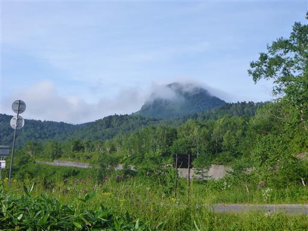
昨日は3人で木戸池を一周したため、本日は家族4人で再度一周する。
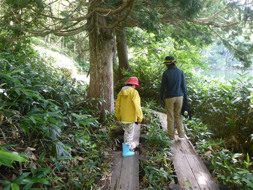
イトトンボを発見。小さくて可愛い。
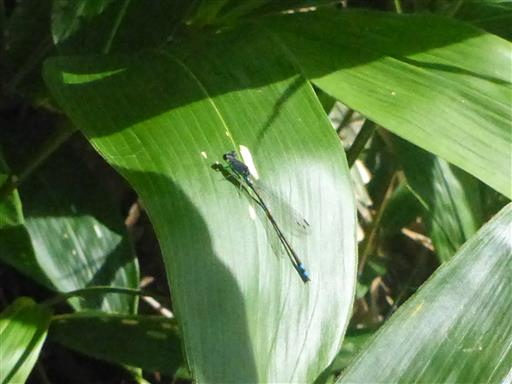
娘はミヤマアカネを捕まえる。
この辺りを飛んでいるのはほとんどがアキアカネで、ミヤマアカネは珍しい。
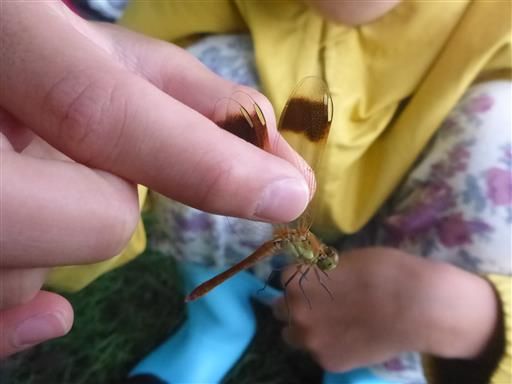
キャンプ場に戻ったら撤収を開始。3日間張りっぱなしで楽だった。
木戸池キャンプ場は不便なところもあったが、
非常に涼しく、さほど混雑もなく、夏にまた来たいと思えるキャンプ場だった。
最後に今朝捕まえたバッタにさよならして、キャンプ場を後にする。
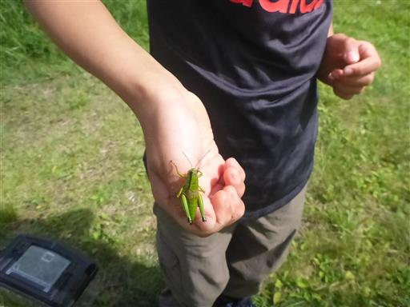
本日は昨日行き損ねた嫗仙の滝に行くことにする。
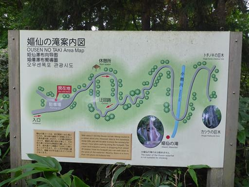
嫗仙の滝までは、遊歩道というよりは登山道に近い道だ。
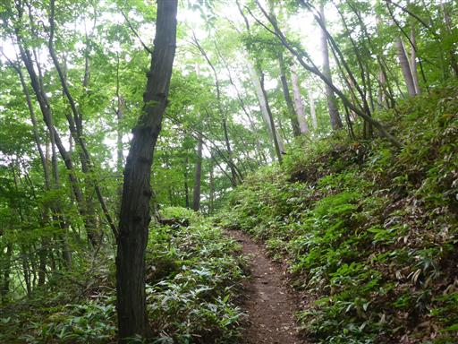
クマ除けの鐘。上にバルブが付いているが、何を代用したものだろう？
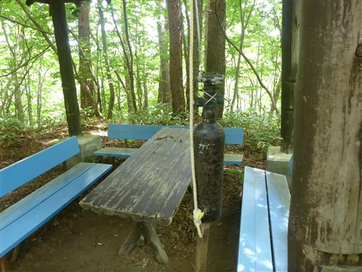
道はずっと下り坂。滝を見て涼んだ後に登って帰るのは今一だ。
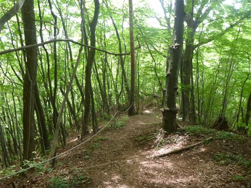
しばらく下ると、赤い色の沢が見えてくる。
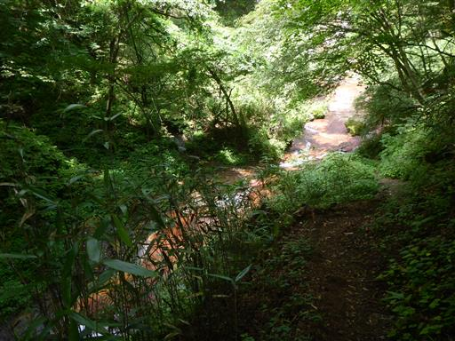
沢まで下りる。独特の色合いだ。
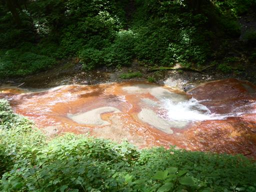
滝の近くまでは少し沢の中を歩く必要がある。
娘は登山用の靴下が濡れていたため本日は登山靴を履いておらず、苦戦している。

嫗仙の滝に到着。
幾筋も水が流れ落ちている美しい滝で、迫力もある。
独特の形と色で個性の強い滝だ。
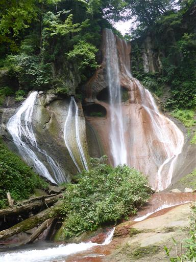
滝の中腹には不思議な穴が2つ空いている。
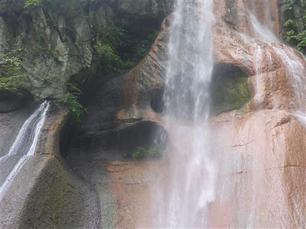
岩が緑と赤に染まっている。
草津から流れてくる水なので、温泉の成分が入っているのだろうか？
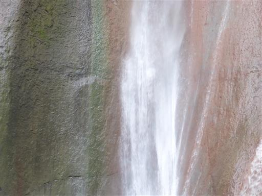
滝の近くに腰を下ろして昼食休憩をとることにする。
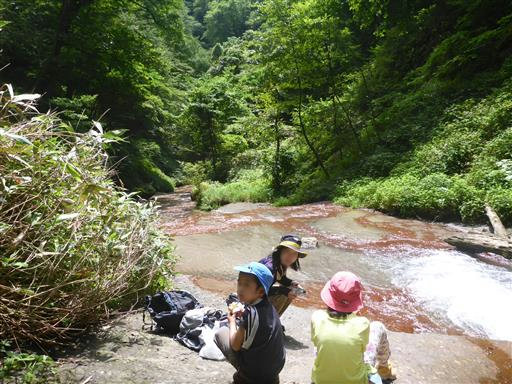
滝の後はカツラの木の見学。滝の近くにあるのだが、場所がちょっとわかりにくい。
息子はパスすると言ったので、娘と二人で見に行く。
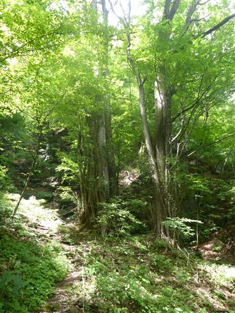
非常に立派なカツラの巨木だ。
カツラの木の巨木は幾つもの幹で構成される。そのため一本の太い幹ほどの迫力は無い。
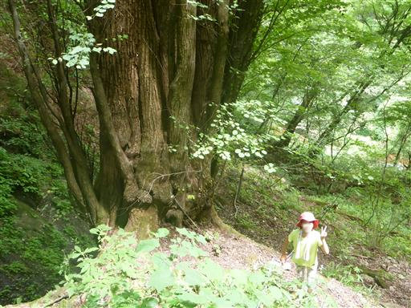
こちらはトチノキの大木。
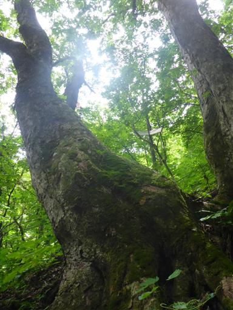
長い登り坂を登り、汗だくになって駐車場に戻ってくる。もう一度草津温泉に入りたいくらいだ。
これで観光はお終い。帰宅の途に就く。
今年のGWに続いてのキャンプ旅行だったが、今回は一箇所にテントを張り続けたため
比較的ゆっくりとすることができた。
久々に山にも登ることができ、充実した旅行を楽しむことができた。
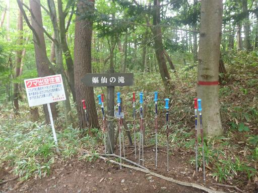